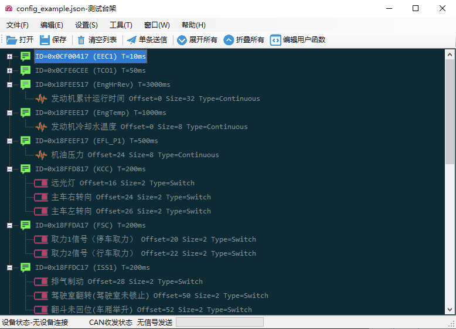

开源CAN总线信号可编程台架
刚才开源了一款以前写的CAN信号可编程台架
很早以前我接触了CAN总线和一些相关的测试技术，随后写了这个台架，但是一直没开源，原因主要是写的太烂，达不到我开源的标准。 后来我修修补补，虽然还是很烂，但是我开源的标准降低了啊，所以就开放了。 再不写点车辆相关的东西我都要忘记自己是车辆工程专业毕业的了。
具体的内容可以读Readme，我复制部分重点在这里。

简介
有很多设备可以读取CAN总线上的数据，或者模拟发生数据，而可编程的平台并不多，一般是借助厂商提供的API调用驱动，达成和设备进行数据交换的目的。
本软件的目的，是构建一个通用的CAN通信规范，可以兼容多种设备，同时有着统一的编程接口，可以对CAN总线进行各种数据操作，完成模拟或者测试的工作。我决定将我这部分工作开源出来，是为了所有饱受手工操作之苦的测试人员做一点事情。
成本起见，请尽可能使用便宜的设备，如果总线负载重，超过500帧每秒，请选择贵一点的设备。
不足之处
以下的不足之处，希望有志之士能帮我改进一下。
我最早写这些代码的时候经验不足，很多东西如果让我重新来过我一定会重新设计，比如
- CANSignal的结构设计的比较“硬”对于驱动的支持和测试任务的支持，都应该做成插件式，这样的话比较利于扩展。
- 关于选择脚本语言，JavaScript的资源会多一点，但是如果重新来过我可能会选择C#。
- 关于脚本语言的IDE，也不是很友善，如果重新来过，我可能做成插件式开发，打包之后可以加载到程序里。
- 再来一遍我可能全部使用WPF开发，主要是我之前开发VB6的经验让我更加熟悉WinForm的开发，所以仅仅是编辑器组件使用了WPF
最后关于源代码中的变量和函数的命名问题，我需要解释一下： 你可能会看见两种命名风格，一种是getDeviceId这样的Java式（lowerCamelCase），一种是GetDeviceId这种C#推荐的方式(UpperCamelCase/PascalCase)。 这个可能会让你维护的时候觉得有点肮脏。 但是由于我在开发的时候还需要写Java，Python，Matlab以及其它很多语言。在你同时写多种语言的时候切换风格真的是一件非常折磨人的事情，所以最早期的代码全部是Java式的命名（包括我早期的Python代码），最近我已经竭尽全力重构为C#式，但是工作量太大，一时难以全部完成。
还有一部分UNIX C式的命名往往是第三方的驱动引入的，这一部分我不准备修改，原因也很简单，开发驱动的人大多是写C或者C++的，他们写的C# API自然也是C的风格。
As the plugin is integrated with a code management system like GitLab or GitHub, you may have to auth with your account before leaving comments around this article.
Notice: This plugin has used Cookie to store your token with an expiration.